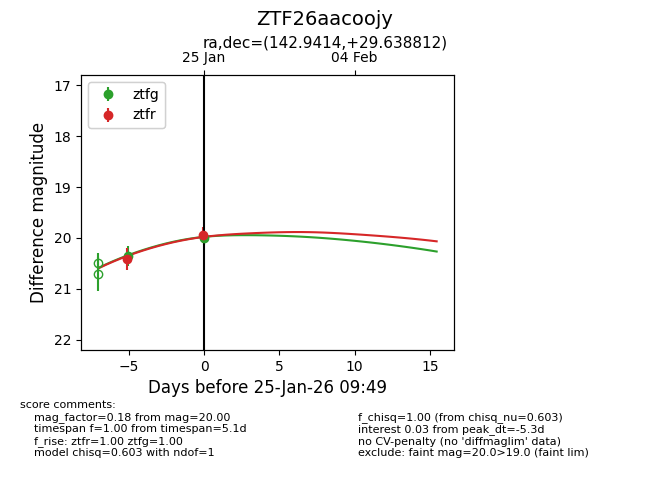
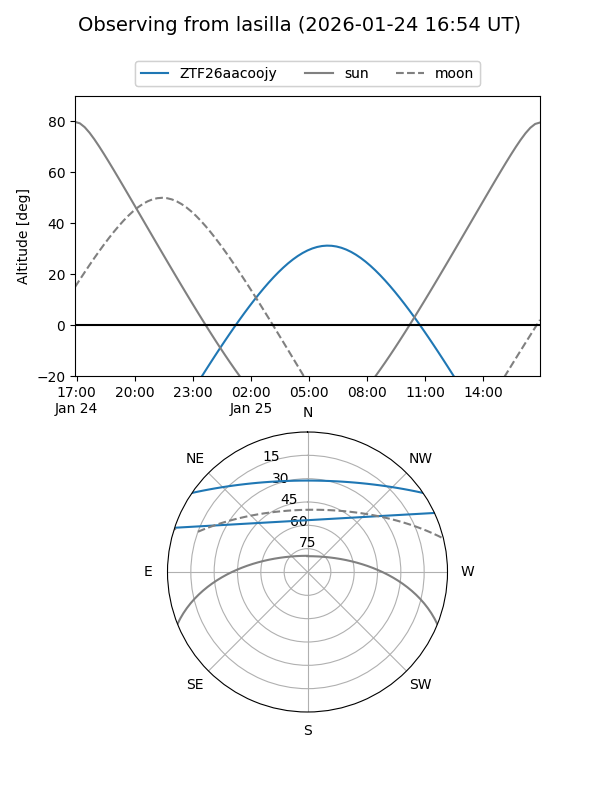
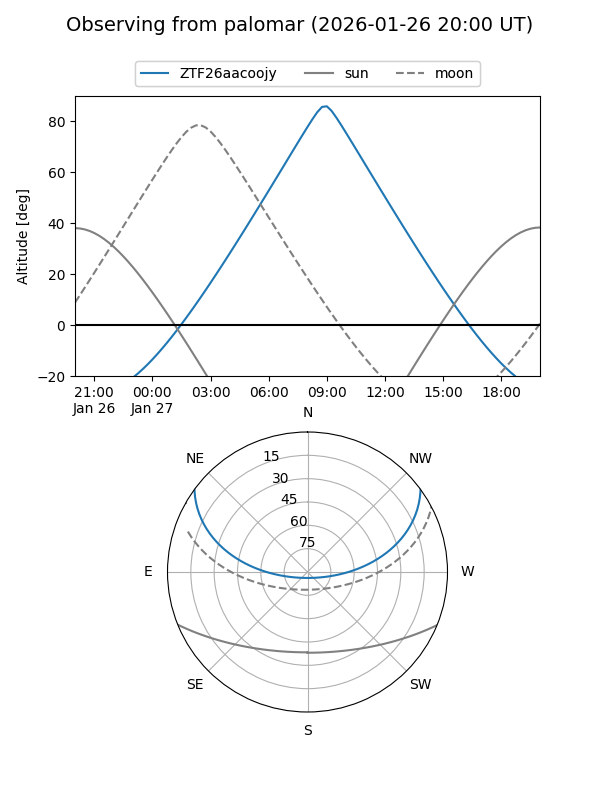
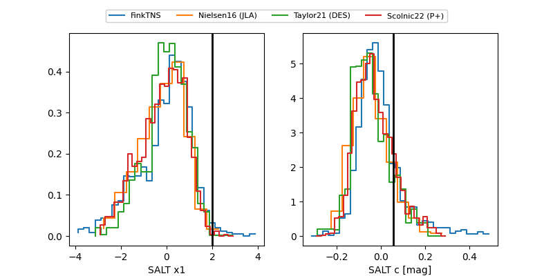

ZTF26aacoojy
Target ZTF26aacoojy at 2026-01-25 09:51
Aliases and brokers:
FINK: link
Lasair: link
ALeRCE: link
alt names
ZTF26aacoojy (ztf,fink_ztf)
Coordinates:
equatorial (ra, dec) = 142.9414,+29.63881
equatorial (HMS+DMS) = 09:31:45.95,+29:38:19.72
galactic (l, b) = (197.3907,+46.34990)
Flags:
Photometry:
last ztfg=20.00, ztfr=19.94
2 ztfg, 2 ztfr detections
Lightcurve

Visibility


Additional plots
